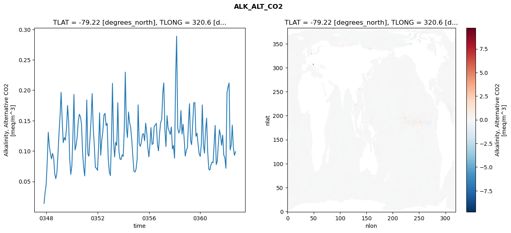
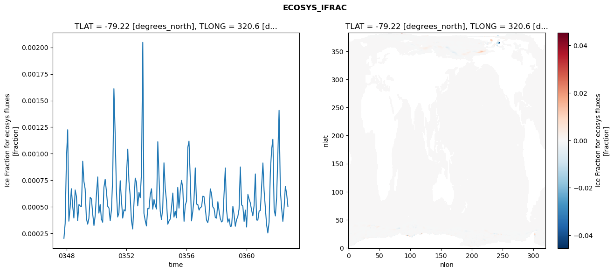
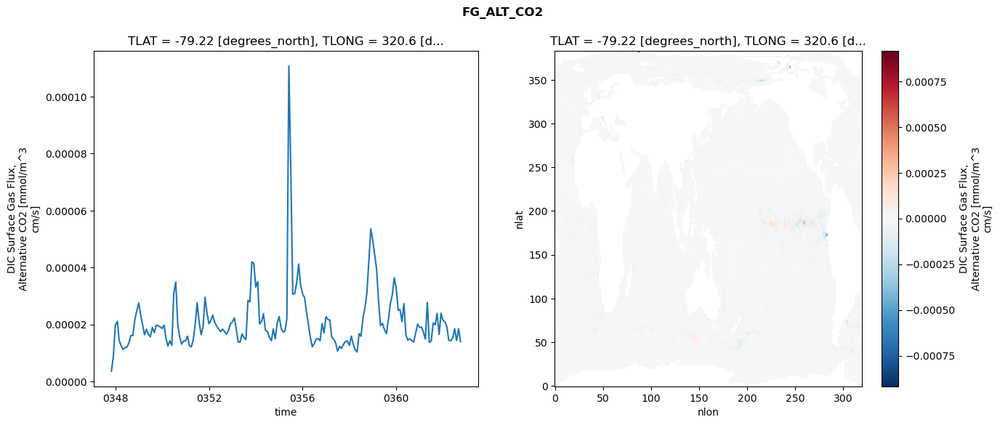
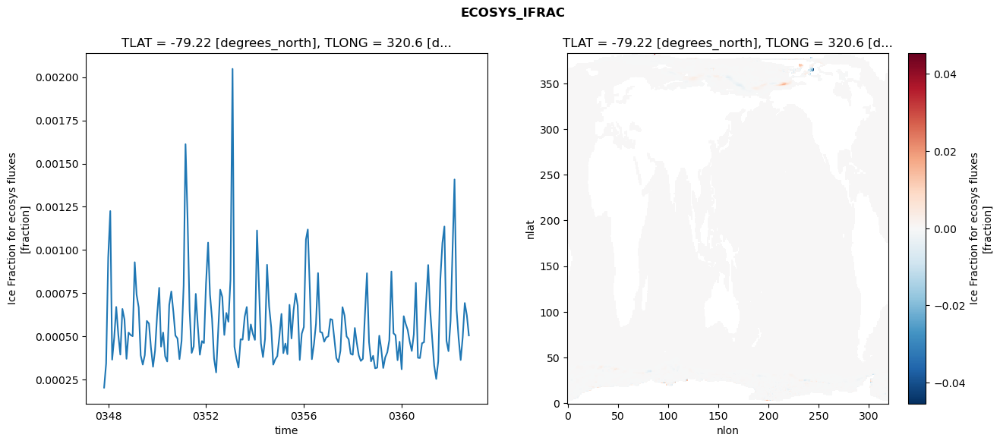
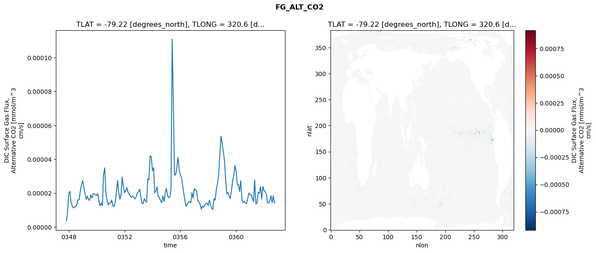
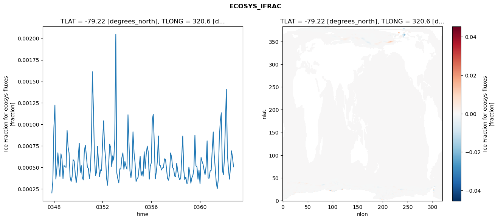
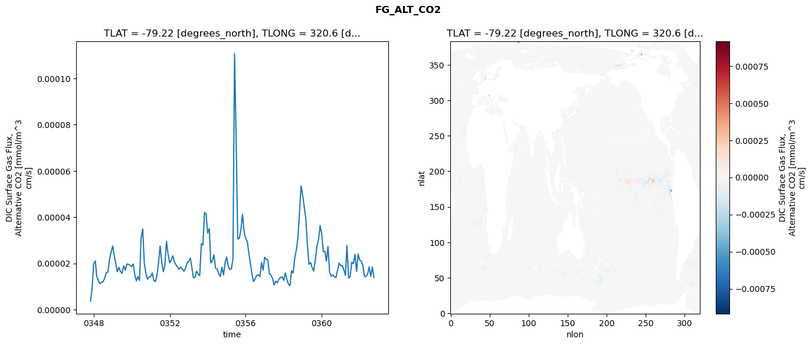

glb-dor_North_Atlantic_basin_000_1999-10-01_00003#
Show code cell source Hide code cell source
import xarray as xr
import matplotlib.pyplot as plt
Show code cell source Hide code cell source
zarr_store = "/path/to/zarr/store"
# Parameters
zarr_store = "/global/cfs/projectdirs/m4746/Projects/Ocean-CDR-Atlas-v0/data/validation/smyle.cdr-atlas-v0.glb-dor_North_Atlantic_basin_000_1999-10-01_00003.001.validation.zarr"
Show code cell source Hide code cell source
%%time
ds_o = xr.open_zarr(zarr_store).compute()
ds_o
CPU times: user 606 ms, sys: 412 ms, total: 1.02 s
Wall time: 1.17 s
<xarray.Dataset> Size: 2MB
Dimensions: (nlat: 384, nlon: 320, time: 180)
Coordinates:
TLAT float64 8B -79.22
TLONG float64 8B 320.6
ULAT float64 8B -78.95
ULONG float64 8B 321.1
* time (time) object 1kB 0347-11-01 00:00:00 ... 0362-10-01 0...
z_t float32 4B 500.0
Dimensions without coordinates: nlat, nlon
Data variables:
ALK_ALT_CO2_diff (nlat, nlon) float32 492kB nan nan nan ... nan nan nan
ALK_ALT_CO2_rmse (time) float64 1kB 0.01389 0.03221 ... 0.09287 0.09887
DIC_ALT_CO2_diff (nlat, nlon) float32 492kB nan nan nan ... nan nan nan
DIC_ALT_CO2_rmse (time) float64 1kB 0.02469 0.0683 ... 0.1354 0.1447
ECOSYS_IFRAC_diff (nlat, nlon) float32 492kB nan nan nan ... nan nan nan
ECOSYS_IFRAC_rmse (time) float64 1kB 0.0002049 0.0003443 ... 0.0005065
FG_ALT_CO2_diff (nlat, nlon) float32 492kB nan nan nan ... nan nan nan
FG_ALT_CO2_rmse (time) float64 1kB 3.661e-06 8.741e-06 ... 1.395e-05xarray.Dataset
- nlat: 384
- nlon: 320
- time: 180
- TLAT()float64-79.22
- long_name :
- array of t-grid latitudes
- units :
- degrees_north
array(-79.22052261)
- TLONG()float64320.6
- long_name :
- array of t-grid longitudes
- units :
- degrees_east
array(320.56250892)
- ULAT()float64-78.95
- long_name :
- array of u-grid latitudes
- units :
- degrees_north
array(-78.95289509)
- ULONG()float64321.1
- long_name :
- array of u-grid longitudes
- units :
- degrees_east
array(321.12500894)
- time(time)object0347-11-01 00:00:00 ... 0362-10-...
- bounds :
- time_bound
- long_name :
- time
array([cftime.DatetimeNoLeap(347, 11, 1, 0, 0, 0, 0, has_year_zero=True), cftime.DatetimeNoLeap(347, 12, 1, 0, 0, 0, 0, has_year_zero=True), cftime.DatetimeNoLeap(348, 1, 1, 0, 0, 0, 0, has_year_zero=True), cftime.DatetimeNoLeap(348, 2, 1, 0, 0, 0, 0, has_year_zero=True), cftime.DatetimeNoLeap(348, 3, 1, 0, 0, 0, 0, has_year_zero=True), cftime.DatetimeNoLeap(348, 4, 1, 0, 0, 0, 0, has_year_zero=True), cftime.DatetimeNoLeap(348, 5, 1, 0, 0, 0, 0, has_year_zero=True), cftime.DatetimeNoLeap(348, 6, 1, 0, 0, 0, 0, has_year_zero=True), cftime.DatetimeNoLeap(348, 7, 1, 0, 0, 0, 0, has_year_zero=True), cftime.DatetimeNoLeap(348, 8, 1, 0, 0, 0, 0, has_year_zero=True), cftime.DatetimeNoLeap(348, 9, 1, 0, 0, 0, 0, has_year_zero=True), cftime.DatetimeNoLeap(348, 10, 1, 0, 0, 0, 0, has_year_zero=True), cftime.DatetimeNoLeap(348, 11, 1, 0, 0, 0, 0, has_year_zero=True), cftime.DatetimeNoLeap(348, 12, 1, 0, 0, 0, 0, has_year_zero=True), cftime.DatetimeNoLeap(349, 1, 1, 0, 0, 0, 0, has_year_zero=True), cftime.DatetimeNoLeap(349, 2, 1, 0, 0, 0, 0, has_year_zero=True), cftime.DatetimeNoLeap(349, 3, 1, 0, 0, 0, 0, has_year_zero=True), cftime.DatetimeNoLeap(349, 4, 1, 0, 0, 0, 0, has_year_zero=True), cftime.DatetimeNoLeap(349, 5, 1, 0, 0, 0, 0, has_year_zero=True), cftime.DatetimeNoLeap(349, 6, 1, 0, 0, 0, 0, has_year_zero=True), cftime.DatetimeNoLeap(349, 7, 1, 0, 0, 0, 0, has_year_zero=True), cftime.DatetimeNoLeap(349, 8, 1, 0, 0, 0, 0, has_year_zero=True), cftime.DatetimeNoLeap(349, 9, 1, 0, 0, 0, 0, has_year_zero=True), cftime.DatetimeNoLeap(349, 10, 1, 0, 0, 0, 0, has_year_zero=True), cftime.DatetimeNoLeap(349, 11, 1, 0, 0, 0, 0, has_year_zero=True), cftime.DatetimeNoLeap(349, 12, 1, 0, 0, 0, 0, has_year_zero=True), cftime.DatetimeNoLeap(350, 1, 1, 0, 0, 0, 0, has_year_zero=True), cftime.DatetimeNoLeap(350, 2, 1, 0, 0, 0, 0, has_year_zero=True), cftime.DatetimeNoLeap(350, 3, 1, 0, 0, 0, 0, has_year_zero=True), cftime.DatetimeNoLeap(350, 4, 1, 0, 0, 0, 0, has_year_zero=True), cftime.DatetimeNoLeap(350, 5, 1, 0, 0, 0, 0, has_year_zero=True), cftime.DatetimeNoLeap(350, 6, 1, 0, 0, 0, 0, has_year_zero=True), cftime.DatetimeNoLeap(350, 7, 1, 0, 0, 0, 0, has_year_zero=True), cftime.DatetimeNoLeap(350, 8, 1, 0, 0, 0, 0, has_year_zero=True), cftime.DatetimeNoLeap(350, 9, 1, 0, 0, 0, 0, has_year_zero=True), cftime.DatetimeNoLeap(350, 10, 1, 0, 0, 0, 0, has_year_zero=True), cftime.DatetimeNoLeap(350, 11, 1, 0, 0, 0, 0, has_year_zero=True), cftime.DatetimeNoLeap(350, 12, 1, 0, 0, 0, 0, has_year_zero=True), cftime.DatetimeNoLeap(351, 1, 1, 0, 0, 0, 0, has_year_zero=True), cftime.DatetimeNoLeap(351, 2, 1, 0, 0, 0, 0, has_year_zero=True), cftime.DatetimeNoLeap(351, 3, 1, 0, 0, 0, 0, has_year_zero=True), cftime.DatetimeNoLeap(351, 4, 1, 0, 0, 0, 0, has_year_zero=True), cftime.DatetimeNoLeap(351, 5, 1, 0, 0, 0, 0, has_year_zero=True), cftime.DatetimeNoLeap(351, 6, 1, 0, 0, 0, 0, has_year_zero=True), cftime.DatetimeNoLeap(351, 7, 1, 0, 0, 0, 0, has_year_zero=True), cftime.DatetimeNoLeap(351, 8, 1, 0, 0, 0, 0, has_year_zero=True), cftime.DatetimeNoLeap(351, 9, 1, 0, 0, 0, 0, has_year_zero=True), cftime.DatetimeNoLeap(351, 10, 1, 0, 0, 0, 0, has_year_zero=True), cftime.DatetimeNoLeap(351, 11, 1, 0, 0, 0, 0, has_year_zero=True), cftime.DatetimeNoLeap(351, 12, 1, 0, 0, 0, 0, has_year_zero=True), cftime.DatetimeNoLeap(352, 1, 1, 0, 0, 0, 0, has_year_zero=True), cftime.DatetimeNoLeap(352, 2, 1, 0, 0, 0, 0, has_year_zero=True), cftime.DatetimeNoLeap(352, 3, 1, 0, 0, 0, 0, has_year_zero=True), cftime.DatetimeNoLeap(352, 4, 1, 0, 0, 0, 0, has_year_zero=True), cftime.DatetimeNoLeap(352, 5, 1, 0, 0, 0, 0, has_year_zero=True), cftime.DatetimeNoLeap(352, 6, 1, 0, 0, 0, 0, has_year_zero=True), cftime.DatetimeNoLeap(352, 7, 1, 0, 0, 0, 0, has_year_zero=True), cftime.DatetimeNoLeap(352, 8, 1, 0, 0, 0, 0, has_year_zero=True), cftime.DatetimeNoLeap(352, 9, 1, 0, 0, 0, 0, has_year_zero=True), cftime.DatetimeNoLeap(352, 10, 1, 0, 0, 0, 0, has_year_zero=True), cftime.DatetimeNoLeap(352, 11, 1, 0, 0, 0, 0, has_year_zero=True), cftime.DatetimeNoLeap(352, 12, 1, 0, 0, 0, 0, has_year_zero=True), cftime.DatetimeNoLeap(353, 1, 1, 0, 0, 0, 0, has_year_zero=True), cftime.DatetimeNoLeap(353, 2, 1, 0, 0, 0, 0, has_year_zero=True), cftime.DatetimeNoLeap(353, 3, 1, 0, 0, 0, 0, has_year_zero=True), cftime.DatetimeNoLeap(353, 4, 1, 0, 0, 0, 0, has_year_zero=True), cftime.DatetimeNoLeap(353, 5, 1, 0, 0, 0, 0, has_year_zero=True), cftime.DatetimeNoLeap(353, 6, 1, 0, 0, 0, 0, has_year_zero=True), cftime.DatetimeNoLeap(353, 7, 1, 0, 0, 0, 0, has_year_zero=True), cftime.DatetimeNoLeap(353, 8, 1, 0, 0, 0, 0, has_year_zero=True), cftime.DatetimeNoLeap(353, 9, 1, 0, 0, 0, 0, has_year_zero=True), cftime.DatetimeNoLeap(353, 10, 1, 0, 0, 0, 0, has_year_zero=True), cftime.DatetimeNoLeap(353, 11, 1, 0, 0, 0, 0, has_year_zero=True), cftime.DatetimeNoLeap(353, 12, 1, 0, 0, 0, 0, has_year_zero=True), cftime.DatetimeNoLeap(354, 1, 1, 0, 0, 0, 0, has_year_zero=True), cftime.DatetimeNoLeap(354, 2, 1, 0, 0, 0, 0, has_year_zero=True), cftime.DatetimeNoLeap(354, 3, 1, 0, 0, 0, 0, has_year_zero=True), cftime.DatetimeNoLeap(354, 4, 1, 0, 0, 0, 0, has_year_zero=True), cftime.DatetimeNoLeap(354, 5, 1, 0, 0, 0, 0, has_year_zero=True), cftime.DatetimeNoLeap(354, 6, 1, 0, 0, 0, 0, has_year_zero=True), cftime.DatetimeNoLeap(354, 7, 1, 0, 0, 0, 0, has_year_zero=True), cftime.DatetimeNoLeap(354, 8, 1, 0, 0, 0, 0, has_year_zero=True), cftime.DatetimeNoLeap(354, 9, 1, 0, 0, 0, 0, has_year_zero=True), cftime.DatetimeNoLeap(354, 10, 1, 0, 0, 0, 0, has_year_zero=True), cftime.DatetimeNoLeap(354, 11, 1, 0, 0, 0, 0, has_year_zero=True), cftime.DatetimeNoLeap(354, 12, 1, 0, 0, 0, 0, has_year_zero=True), cftime.DatetimeNoLeap(355, 1, 1, 0, 0, 0, 0, has_year_zero=True), cftime.DatetimeNoLeap(355, 2, 1, 0, 0, 0, 0, has_year_zero=True), cftime.DatetimeNoLeap(355, 3, 1, 0, 0, 0, 0, has_year_zero=True), cftime.DatetimeNoLeap(355, 4, 1, 0, 0, 0, 0, has_year_zero=True), cftime.DatetimeNoLeap(355, 5, 1, 0, 0, 0, 0, has_year_zero=True), cftime.DatetimeNoLeap(355, 6, 1, 0, 0, 0, 0, has_year_zero=True), cftime.DatetimeNoLeap(355, 7, 1, 0, 0, 0, 0, has_year_zero=True), cftime.DatetimeNoLeap(355, 8, 1, 0, 0, 0, 0, has_year_zero=True), cftime.DatetimeNoLeap(355, 9, 1, 0, 0, 0, 0, has_year_zero=True), cftime.DatetimeNoLeap(355, 10, 1, 0, 0, 0, 0, has_year_zero=True), cftime.DatetimeNoLeap(355, 11, 1, 0, 0, 0, 0, has_year_zero=True), cftime.DatetimeNoLeap(355, 12, 1, 0, 0, 0, 0, has_year_zero=True), cftime.DatetimeNoLeap(356, 1, 1, 0, 0, 0, 0, has_year_zero=True), cftime.DatetimeNoLeap(356, 2, 1, 0, 0, 0, 0, has_year_zero=True), cftime.DatetimeNoLeap(356, 3, 1, 0, 0, 0, 0, has_year_zero=True), cftime.DatetimeNoLeap(356, 4, 1, 0, 0, 0, 0, has_year_zero=True), cftime.DatetimeNoLeap(356, 5, 1, 0, 0, 0, 0, has_year_zero=True), cftime.DatetimeNoLeap(356, 6, 1, 0, 0, 0, 0, has_year_zero=True), cftime.DatetimeNoLeap(356, 7, 1, 0, 0, 0, 0, has_year_zero=True), cftime.DatetimeNoLeap(356, 8, 1, 0, 0, 0, 0, has_year_zero=True), cftime.DatetimeNoLeap(356, 9, 1, 0, 0, 0, 0, has_year_zero=True), cftime.DatetimeNoLeap(356, 10, 1, 0, 0, 0, 0, has_year_zero=True), cftime.DatetimeNoLeap(356, 11, 1, 0, 0, 0, 0, has_year_zero=True), cftime.DatetimeNoLeap(356, 12, 1, 0, 0, 0, 0, has_year_zero=True), cftime.DatetimeNoLeap(357, 1, 1, 0, 0, 0, 0, has_year_zero=True), cftime.DatetimeNoLeap(357, 2, 1, 0, 0, 0, 0, has_year_zero=True), cftime.DatetimeNoLeap(357, 3, 1, 0, 0, 0, 0, has_year_zero=True), cftime.DatetimeNoLeap(357, 4, 1, 0, 0, 0, 0, has_year_zero=True), cftime.DatetimeNoLeap(357, 5, 1, 0, 0, 0, 0, has_year_zero=True), cftime.DatetimeNoLeap(357, 6, 1, 0, 0, 0, 0, has_year_zero=True), cftime.DatetimeNoLeap(357, 7, 1, 0, 0, 0, 0, has_year_zero=True), cftime.DatetimeNoLeap(357, 8, 1, 0, 0, 0, 0, has_year_zero=True), cftime.DatetimeNoLeap(357, 9, 1, 0, 0, 0, 0, has_year_zero=True), cftime.DatetimeNoLeap(357, 10, 1, 0, 0, 0, 0, has_year_zero=True), cftime.DatetimeNoLeap(357, 11, 1, 0, 0, 0, 0, has_year_zero=True), cftime.DatetimeNoLeap(357, 12, 1, 0, 0, 0, 0, has_year_zero=True), cftime.DatetimeNoLeap(358, 1, 1, 0, 0, 0, 0, has_year_zero=True), cftime.DatetimeNoLeap(358, 2, 1, 0, 0, 0, 0, has_year_zero=True), cftime.DatetimeNoLeap(358, 3, 1, 0, 0, 0, 0, has_year_zero=True), cftime.DatetimeNoLeap(358, 4, 1, 0, 0, 0, 0, has_year_zero=True), cftime.DatetimeNoLeap(358, 5, 1, 0, 0, 0, 0, has_year_zero=True), cftime.DatetimeNoLeap(358, 6, 1, 0, 0, 0, 0, has_year_zero=True), cftime.DatetimeNoLeap(358, 7, 1, 0, 0, 0, 0, has_year_zero=True), cftime.DatetimeNoLeap(358, 8, 1, 0, 0, 0, 0, has_year_zero=True), cftime.DatetimeNoLeap(358, 9, 1, 0, 0, 0, 0, has_year_zero=True), cftime.DatetimeNoLeap(358, 10, 1, 0, 0, 0, 0, has_year_zero=True), cftime.DatetimeNoLeap(358, 11, 1, 0, 0, 0, 0, has_year_zero=True), cftime.DatetimeNoLeap(358, 12, 1, 0, 0, 0, 0, has_year_zero=True), cftime.DatetimeNoLeap(359, 1, 1, 0, 0, 0, 0, has_year_zero=True), cftime.DatetimeNoLeap(359, 2, 1, 0, 0, 0, 0, has_year_zero=True), cftime.DatetimeNoLeap(359, 3, 1, 0, 0, 0, 0, has_year_zero=True), cftime.DatetimeNoLeap(359, 4, 1, 0, 0, 0, 0, has_year_zero=True), cftime.DatetimeNoLeap(359, 5, 1, 0, 0, 0, 0, has_year_zero=True), cftime.DatetimeNoLeap(359, 6, 1, 0, 0, 0, 0, has_year_zero=True), cftime.DatetimeNoLeap(359, 7, 1, 0, 0, 0, 0, has_year_zero=True), cftime.DatetimeNoLeap(359, 8, 1, 0, 0, 0, 0, has_year_zero=True), cftime.DatetimeNoLeap(359, 9, 1, 0, 0, 0, 0, has_year_zero=True), cftime.DatetimeNoLeap(359, 10, 1, 0, 0, 0, 0, has_year_zero=True), cftime.DatetimeNoLeap(359, 11, 1, 0, 0, 0, 0, has_year_zero=True), cftime.DatetimeNoLeap(359, 12, 1, 0, 0, 0, 0, has_year_zero=True), cftime.DatetimeNoLeap(360, 1, 1, 0, 0, 0, 0, has_year_zero=True), cftime.DatetimeNoLeap(360, 2, 1, 0, 0, 0, 0, has_year_zero=True), cftime.DatetimeNoLeap(360, 3, 1, 0, 0, 0, 0, has_year_zero=True), cftime.DatetimeNoLeap(360, 4, 1, 0, 0, 0, 0, has_year_zero=True), cftime.DatetimeNoLeap(360, 5, 1, 0, 0, 0, 0, has_year_zero=True), cftime.DatetimeNoLeap(360, 6, 1, 0, 0, 0, 0, has_year_zero=True), cftime.DatetimeNoLeap(360, 7, 1, 0, 0, 0, 0, has_year_zero=True), cftime.DatetimeNoLeap(360, 8, 1, 0, 0, 0, 0, has_year_zero=True), cftime.DatetimeNoLeap(360, 9, 1, 0, 0, 0, 0, has_year_zero=True), cftime.DatetimeNoLeap(360, 10, 1, 0, 0, 0, 0, has_year_zero=True), cftime.DatetimeNoLeap(360, 11, 1, 0, 0, 0, 0, has_year_zero=True), cftime.DatetimeNoLeap(360, 12, 1, 0, 0, 0, 0, has_year_zero=True), cftime.DatetimeNoLeap(361, 1, 1, 0, 0, 0, 0, has_year_zero=True), cftime.DatetimeNoLeap(361, 2, 1, 0, 0, 0, 0, has_year_zero=True), cftime.DatetimeNoLeap(361, 3, 1, 0, 0, 0, 0, has_year_zero=True), cftime.DatetimeNoLeap(361, 4, 1, 0, 0, 0, 0, has_year_zero=True), cftime.DatetimeNoLeap(361, 5, 1, 0, 0, 0, 0, has_year_zero=True), cftime.DatetimeNoLeap(361, 6, 1, 0, 0, 0, 0, has_year_zero=True), cftime.DatetimeNoLeap(361, 7, 1, 0, 0, 0, 0, has_year_zero=True), cftime.DatetimeNoLeap(361, 8, 1, 0, 0, 0, 0, has_year_zero=True), cftime.DatetimeNoLeap(361, 9, 1, 0, 0, 0, 0, has_year_zero=True), cftime.DatetimeNoLeap(361, 10, 1, 0, 0, 0, 0, has_year_zero=True), cftime.DatetimeNoLeap(361, 11, 1, 0, 0, 0, 0, has_year_zero=True), cftime.DatetimeNoLeap(361, 12, 1, 0, 0, 0, 0, has_year_zero=True), cftime.DatetimeNoLeap(362, 1, 1, 0, 0, 0, 0, has_year_zero=True), cftime.DatetimeNoLeap(362, 2, 1, 0, 0, 0, 0, has_year_zero=True), cftime.DatetimeNoLeap(362, 3, 1, 0, 0, 0, 0, has_year_zero=True), cftime.DatetimeNoLeap(362, 4, 1, 0, 0, 0, 0, has_year_zero=True), cftime.DatetimeNoLeap(362, 5, 1, 0, 0, 0, 0, has_year_zero=True), cftime.DatetimeNoLeap(362, 6, 1, 0, 0, 0, 0, has_year_zero=True), cftime.DatetimeNoLeap(362, 7, 1, 0, 0, 0, 0, has_year_zero=True), cftime.DatetimeNoLeap(362, 8, 1, 0, 0, 0, 0, has_year_zero=True), cftime.DatetimeNoLeap(362, 9, 1, 0, 0, 0, 0, has_year_zero=True), cftime.DatetimeNoLeap(362, 10, 1, 0, 0, 0, 0, has_year_zero=True)], dtype=object) - z_t()float32500.0
- long_name :
- depth from surface to midpoint of layer
- positive :
- down
- units :
- centimeters
- valid_max :
- 537500.0
- valid_min :
- 500.0
array(500., dtype=float32)
- ALK_ALT_CO2_diff(nlat, nlon)float32nan nan nan nan ... nan nan nan nan
- cell_methods :
- time: mean
- grid_loc :
- 3111
- long_name :
- Alkalinity, Alternative CO2
- units :
- meq/m^3
array([[ nan, nan, nan, ..., nan, nan, nan], [ nan, nan, nan, ..., nan, nan, nan], [ 0.01806641, 0.0168457 , -0.00268555, ..., nan, nan, nan], ..., [ nan, nan, nan, ..., nan, nan, nan], [ nan, nan, nan, ..., nan, nan, nan], [ nan, nan, nan, ..., nan, nan, nan]], dtype=float32) - ALK_ALT_CO2_rmse(time)float640.01389 0.03221 ... 0.09287 0.09887
- cell_methods :
- time: mean
- grid_loc :
- 3111
- long_name :
- Alkalinity, Alternative CO2
- units :
- meq/m^3
array([0.01389243, 0.03221426, 0.04511885, 0.0843867 , 0.13075503, 0.1081634 , 0.0961061 , 0.08702165, 0.09614075, 0.08897502, 0.06271109, 0.05452104, 0.06403122, 0.0937174 , 0.13027582, 0.15973204, 0.19657234, 0.15049152, 0.11379147, 0.1221865 , 0.11784692, 0.13667356, 0.17488633, 0.14804417, 0.08694561, 0.06150294, 0.07591541, 0.1276921 , 0.19311606, 0.10171212, 0.10927629, 0.12286381, 0.14868599, 0.16046658, 0.15643884, 0.14530875, 0.09894267, 0.07381071, 0.05907992, 0.10608247, 0.18396706, 0.09525987, 0.09150538, 0.12137663, 0.15132354, 0.19453803, 0.13770857, 0.1093493 , 0.07270214, 0.07205005, 0.06806328, 0.10914688, 0.16283229, 0.09294761, 0.11740289, 0.13219137, 0.15914494, 0.16202287, 0.1421196 , 0.14544258, 0.08748878, 0.06623992, 0.05962911, 0.11846622, 0.21129463, 0.11770896, 0.09027431, 0.11443543, 0.10917299, 0.17938167, 0.09993609, 0.086934 , 0.08601838, 0.09384194, 0.09121487, 0.13727405, 0.22967702, 0.140153 , 0.12206323, 0.16424977, 0.14705807, 0.13881365, 0.11821848, 0.09168968, 0.06705576, 0.06542684, 0.07046035, 0.08667419, 0.17596722, 0.11205069, 0.10773545, 0.11453852, 0.12704074, 0.1285739 , 0.11686544, 0.14595853, 0.13078721, 0.10534652, 0.0905051 , 0.1106953 , 0.13864738, 0.11074223, 0.11226143, 0.14052639, 0.14266257, 0.14556274, 0.1105941 , 0.10029514, 0.12876206, 0.14680809, 0.15214167, 0.19668431, 0.21199181, 0.13477484, 0.10736186, 0.1583031 , 0.13786523, 0.1326458 , 0.12712414, 0.13949621, 0.10351001, 0.10913181, 0.08828819, 0.22134563, 0.28890605, 0.13775878, 0.12971624, 0.13382126, 0.16652653, 0.12798807, 0.14395136, 0.12008243, 0.09157126, 0.10110104, 0.1056941 , 0.14683392, 0.17791781, 0.11707823, 0.11044481, 0.14511694, 0.17937778, 0.17969013, 0.12423264, 0.12930913, 0.11108301, 0.09567438, 0.09120403, 0.11140773, 0.17579841, 0.111193 , 0.09652907, 0.13333228, 0.15393094, 0.09879503, 0.07029387, 0.06869531, 0.07705548, 0.08173815, 0.08080848, 0.11228381, 0.14218625, 0.07767565, 0.08372104, 0.11285863, 0.13513772, 0.12571684, 0.10937785, 0.12617485, 0.09338777, 0.08937059, 0.07164526, 0.1960648 , 0.20495542, 0.21189107, 0.1018534 , 0.10978955, 0.14268779, 0.10553666, 0.09286803, 0.09886671]) - DIC_ALT_CO2_diff(nlat, nlon)float32nan nan nan nan ... nan nan nan nan
- cell_methods :
- time: mean
- grid_loc :
- 3111
- long_name :
- Dissolved Inorganic Carbon, Alternative CO2
- units :
- mmol/m^3
array([[ nan, nan, nan, ..., nan, nan, nan], [ nan, nan, nan, ..., nan, nan, nan], [0.02612305, 0.02319336, 0.00488281, ..., nan, nan, nan], ..., [ nan, nan, nan, ..., nan, nan, nan], [ nan, nan, nan, ..., nan, nan, nan], [ nan, nan, nan, ..., nan, nan, nan]], dtype=float32) - DIC_ALT_CO2_rmse(time)float640.02469 0.0683 ... 0.1354 0.1447
- cell_methods :
- time: mean
- grid_loc :
- 3111
- long_name :
- Dissolved Inorganic Carbon, Alternative CO2
- units :
- mmol/m^3
array([0.02468868, 0.0683014 , 0.11075529, 0.1540597 , 0.16692961, 0.14533347, 0.1294164 , 0.12923542, 0.14520006, 0.14840488, 0.13495954, 0.13809786, 0.15081487, 0.18902638, 0.22768568, 0.22451899, 0.22906575, 0.18455504, 0.14896235, 0.15088971, 0.15173112, 0.16916798, 0.20673596, 0.18410266, 0.1351077 , 0.12364841, 0.13108635, 0.16092925, 0.20554224, 0.13424092, 0.13178658, 0.14251991, 0.17263063, 0.18394169, 0.1840593 , 0.17565598, 0.14313306, 0.13425439, 0.10685017, 0.13570092, 0.18680144, 0.11952565, 0.12265615, 0.14871351, 0.1784325 , 0.21037815, 0.16820468, 0.14795814, 0.13069715, 0.13195585, 0.11759324, 0.14202572, 0.18041031, 0.13458793, 0.14993399, 0.1556072 , 0.17184018, 0.17846962, 0.15926733, 0.16249782, 0.12539055, 0.10997586, 0.10702919, 0.14011828, 0.21207778, 0.13843574, 0.11492624, 0.13022416, 0.13595626, 0.19668093, 0.17683048, 0.19826578, 0.20727078, 0.19814397, 0.18925063, 0.22535315, 0.27072279, 0.20229521, 0.19715003, 0.19920979, 0.17645294, 0.17068608, 0.1548011 , 0.14204618, 0.12135421, 0.12183551, 0.12135739, 0.13288307, 0.20955601, 0.16049789, 0.16094629, 0.17663941, 0.18678677, 0.17738619, 0.17945938, 0.22838702, 0.26603746, 0.21915407, 0.1980442 , 0.21592367, 0.21581094, 0.17610521, 0.15467089, 0.1643134 , 0.1784989 , 0.17339852, 0.14218753, 0.15693576, 0.18820676, 0.19834194, 0.20907997, 0.23247039, 0.23508698, 0.16653596, 0.14328029, 0.16951422, 0.16003338, 0.15563152, 0.14587897, 0.14442786, 0.12497481, 0.12771668, 0.11072291, 0.21327255, 0.26980757, 0.14298039, 0.13321412, 0.15040332, 0.19482104, 0.1957659 , 0.24847875, 0.27717487, 0.30411645, 0.3180335 , 0.27550786, 0.30469206, 0.36866193, 0.28115021, 0.18932958, 0.19244116, 0.21264042, 0.21849943, 0.19207429, 0.22260125, 0.2400883 , 0.20890833, 0.18390509, 0.18798006, 0.23196668, 0.17602094, 0.14594417, 0.16266295, 0.18654838, 0.14400354, 0.12630278, 0.1291703 , 0.13839535, 0.1325365 , 0.13346676, 0.15214132, 0.18120879, 0.12984459, 0.11619408, 0.1281704 , 0.1547448 , 0.1591297 , 0.16183535, 0.1649071 , 0.14460846, 0.15423732, 0.12983785, 0.20383189, 0.21653884, 0.21569827, 0.12502264, 0.12625715, 0.1636345 , 0.15224678, 0.13544018, 0.14470393]) - ECOSYS_IFRAC_diff(nlat, nlon)float32nan nan nan nan ... nan nan nan nan
- cell_methods :
- time: mean
- grid_loc :
- 2110
- long_name :
- Ice Fraction for ecosys fluxes
- units :
- fraction
array([[ nan, nan, nan, ..., nan, nan, nan], [ nan, nan, nan, ..., nan, nan, nan], [-2.4437904e-06, -1.1920929e-06, 1.2636185e-05, ..., nan, nan, nan], ..., [ nan, nan, nan, ..., nan, nan, nan], [ nan, nan, nan, ..., nan, nan, nan], [ nan, nan, nan, ..., nan, nan, nan]], dtype=float32) - ECOSYS_IFRAC_rmse(time)float640.0002049 0.0003443 ... 0.0005065
- cell_methods :
- time: mean
- grid_loc :
- 2110
- long_name :
- Ice Fraction for ecosys fluxes
- units :
- fraction
array([0.00020486, 0.0003443 , 0.0009573 , 0.00122555, 0.00036656, 0.0004943 , 0.00067131, 0.00050983, 0.00039572, 0.00065952, 0.00059894, 0.00037151, 0.00052308, 0.0005092 , 0.00050202, 0.00092963, 0.0007421 , 0.00066902, 0.00039112, 0.00033798, 0.0003928 , 0.00059035, 0.00057553, 0.00043612, 0.00032568, 0.0004183 , 0.00062307, 0.00078189, 0.00044203, 0.00052315, 0.00038611, 0.00035588, 0.00068346, 0.00076061, 0.0006422 , 0.00050588, 0.00048927, 0.00037001, 0.00047439, 0.00079577, 0.00161195, 0.00117678, 0.00064983, 0.00040552, 0.00044299, 0.00074667, 0.00055864, 0.0003951 , 0.00047382, 0.00046266, 0.00080627, 0.00104298, 0.00074335, 0.00060323, 0.00037209, 0.00029301, 0.00052883, 0.00077095, 0.00072884, 0.00050964, 0.00063636, 0.00058593, 0.00082926, 0.00204741, 0.00044098, 0.00037186, 0.00032111, 0.00048437, 0.00048229, 0.00061434, 0.00067074, 0.00047967, 0.00056997, 0.00051587, 0.00048078, 0.00111303, 0.00080258, 0.00046031, 0.00038162, 0.00048671, 0.00091462, 0.00067315, 0.00055354, 0.00033769, 0.00036884, 0.00038683, 0.00049986, 0.0006309 , 0.00040447, 0.00045946, 0.00039819, 0.0006835 , 0.00048902, 0.00065258, 0.00074899, 0.00068005, 0.0003648 , 0.00051661, 0.00055513, 0.00106084, 0.00111886, 0.00076745, 0.00036914, 0.00045534, 0.00057327, 0.0008671 , 0.00052689, 0.00052275, 0.0004704 , 0.00049487, 0.00050133, 0.00060115, 0.00059723, 0.00048762, 0.00037607, 0.00035232, 0.00041786, 0.00066986, 0.00062121, 0.00050103, 0.00048441, 0.00040058, 0.00039501, 0.00054948, 0.00046648, 0.00039117, 0.00035923, 0.00037134, 0.00062064, 0.00086617, 0.00046809, 0.00035684, 0.00038882, 0.00031669, 0.00032046, 0.00050515, 0.00043165, 0.0003185 , 0.00037981, 0.00040944, 0.00047982, 0.00087585, 0.00051889, 0.00050794, 0.00036348, 0.00047026, 0.00031101, 0.00061771, 0.00057487, 0.00053846, 0.00047134, 0.00041682, 0.00051179, 0.00081017, 0.0003775 , 0.00037601, 0.00046149, 0.00046748, 0.0006984 , 0.00091336, 0.00065834, 0.00049092, 0.00033339, 0.00025517, 0.0003573 , 0.00083064, 0.00104071, 0.00113616, 0.0004759 , 0.00041574, 0.00059095, 0.00101707, 0.00140813, 0.00065402, 0.00049058, 0.0003646 , 0.00049556, 0.00069378, 0.000623 , 0.00050651]) - FG_ALT_CO2_diff(nlat, nlon)float32nan nan nan nan ... nan nan nan nan
- cell_methods :
- time: mean
- grid_loc :
- 2110
- long_name :
- DIC Surface Gas Flux, Alternative CO2
- units :
- mmol/m^3 cm/s
array([[ nan, nan, nan, ..., nan, nan, nan], [ nan, nan, nan, ..., nan, nan, nan], [-6.6520442e-09, -1.0934286e-08, -9.0259800e-09, ..., nan, nan, nan], ..., [ nan, nan, nan, ..., nan, nan, nan], [ nan, nan, nan, ..., nan, nan, nan], [ nan, nan, nan, ..., nan, nan, nan]], dtype=float32) - FG_ALT_CO2_rmse(time)float643.661e-06 8.741e-06 ... 1.395e-05
- cell_methods :
- time: mean
- grid_loc :
- 2110
- long_name :
- DIC Surface Gas Flux, Alternative CO2
- units :
- mmol/m^3 cm/s
array([3.66123263e-06, 8.74146495e-06, 1.97244306e-05, 2.11290707e-05, 1.45164637e-05, 1.25432716e-05, 1.12437186e-05, 1.18541199e-05, 1.20285698e-05, 1.36040256e-05, 1.60943099e-05, 1.61698267e-05, 2.16511903e-05, 2.47594943e-05, 2.75339339e-05, 2.33360903e-05, 2.00233887e-05, 1.63748239e-05, 1.83017349e-05, 1.64654500e-05, 1.56890811e-05, 1.89741667e-05, 1.70914953e-05, 1.97430357e-05, 1.95482604e-05, 1.91534940e-05, 1.86098243e-05, 1.97907555e-05, 1.51768879e-05, 1.24369887e-05, 1.42675629e-05, 1.26428840e-05, 3.09207227e-05, 3.49076599e-05, 2.00725354e-05, 1.56498010e-05, 1.31024568e-05, 1.41790014e-05, 1.41978730e-05, 1.59297682e-05, 1.26360564e-05, 1.21262462e-05, 1.46736453e-05, 2.01642110e-05, 2.76157260e-05, 2.07697526e-05, 1.64149225e-05, 1.91374191e-05, 2.95548353e-05, 2.39765902e-05, 2.02334342e-05, 2.14860377e-05, 2.33112300e-05, 2.07601219e-05, 1.94208493e-05, 1.83823402e-05, 1.74796269e-05, 1.83882615e-05, 1.75280235e-05, 1.65917813e-05, 1.79003636e-05, 2.02018572e-05, 2.09052996e-05, 2.23007915e-05, 1.85988612e-05, 1.39335442e-05, 1.38015793e-05, 1.67042925e-05, 1.54221471e-05, 1.47010820e-05, 2.85045405e-05, 2.79115471e-05, 4.19994793e-05, 4.14515147e-05, 3.31458031e-05, 3.50881801e-05, 2.02034167e-05, 2.11101886e-05, 2.37532785e-05, 1.79123996e-05, ... 2.46935466e-05, 2.00817149e-05, 1.54981416e-05, 1.21694228e-05, 1.33313928e-05, 1.48537106e-05, 1.50799890e-05, 1.42877601e-05, 2.03395803e-05, 1.71030610e-05, 2.27031711e-05, 2.17336818e-05, 2.15603857e-05, 1.55240365e-05, 1.48313102e-05, 1.34864366e-05, 1.06230310e-05, 1.23327443e-05, 1.16470124e-05, 1.30905537e-05, 1.39703650e-05, 1.42102138e-05, 1.26652521e-05, 1.59282478e-05, 1.31436634e-05, 1.11205131e-05, 1.03514093e-05, 1.67908304e-05, 1.58725389e-05, 2.22947542e-05, 2.59221630e-05, 3.11055518e-05, 4.23357092e-05, 5.35339565e-05, 4.93423940e-05, 4.41391866e-05, 3.94824375e-05, 2.79404058e-05, 1.96360065e-05, 2.03973338e-05, 1.82136627e-05, 1.67450293e-05, 2.16396417e-05, 2.72830540e-05, 3.04525059e-05, 3.63890153e-05, 3.26485452e-05, 2.50055603e-05, 2.52451353e-05, 2.09998556e-05, 2.73173647e-05, 1.63959895e-05, 1.44738416e-05, 1.50253647e-05, 1.42862793e-05, 1.38570913e-05, 1.70707193e-05, 2.01236588e-05, 1.89679096e-05, 1.90518285e-05, 1.73071161e-05, 1.48740111e-05, 2.77531161e-05, 1.36834118e-05, 1.41908658e-05, 2.05423694e-05, 1.98925649e-05, 2.38858470e-05, 1.65194637e-05, 2.39815682e-05, 2.14352615e-05, 2.08621841e-05, 1.93061905e-05, 1.44031804e-05, 1.43061551e-05, 1.53035569e-05, 1.85238193e-05, 1.43636397e-05, 1.84707710e-05, 1.39538663e-05])
- timePandasIndex
PandasIndex(CFTimeIndex([0347-11-01 00:00:00, 0347-12-01 00:00:00, 0348-01-01 00:00:00, 0348-02-01 00:00:00, 0348-03-01 00:00:00, 0348-04-01 00:00:00, 0348-05-01 00:00:00, 0348-06-01 00:00:00, 0348-07-01 00:00:00, 0348-08-01 00:00:00, ... 0362-01-01 00:00:00, 0362-02-01 00:00:00, 0362-03-01 00:00:00, 0362-04-01 00:00:00, 0362-05-01 00:00:00, 0362-06-01 00:00:00, 0362-07-01 00:00:00, 0362-08-01 00:00:00, 0362-09-01 00:00:00, 0362-10-01 00:00:00], dtype='object', length=180, calendar='noleap', freq='MS'))
Show code cell source Hide code cell source
variables = [v[:-5] for v in ds_o.variables if "_rmse" in v]
Show code cell source Hide code cell source
plt.rcParams.update({'figure.max_open_warning': 0})
for v in variables:
fig, axs = plt.subplots(1, 2, figsize=(15, 6))
ds_o[f"{v}_rmse"].plot(ax=axs[0])
ds_o[f"{v}_diff"].plot(ax=axs[1])
plt.suptitle(v, fontweight="bold")

 




